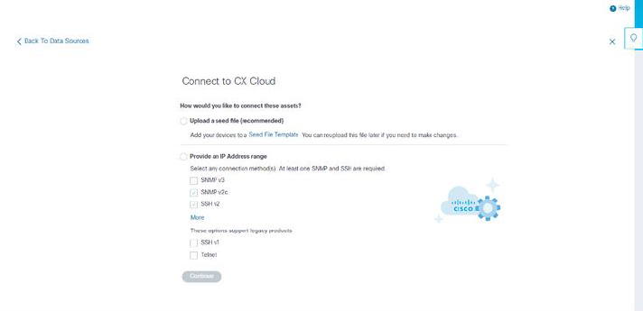

Telemetry collection has been extended to devices not managed by the Cisco DNA Center, enabling customers to view and interact with telemetry-derived insights and analytics for a broader range of devices. After the initial CX Cloud Agent setup, users have the option to configure CX Cloud Agent to connect to 20 additional Cisco DNA Centers within the infrastructure monitored by CX Cloud. Users can also connect CX Cloud Agent directly to other hardware assets in their environment, up to 10,000 directly connected devices.
Users can identify devices to incorporate into CX Cloud by uniquely identifying such devices using a seed file or by specifying an IP range, which should be scanned by CX Cloud Agent. Both approaches rely on Simple Network Management Protocol (SNMP) for the purpose of discovery (SNMP) and on Secure Shell (SSH) for connectivity. These must be properly configured to enable successful telemetry collection.
Notes: Either the seed file or IP range can be used. It is not possible to change this selection after the initial set-up.
Notes: An initial seed file can be replaced with another seed file while an initial IP range can be edited to a new IP range.
When Other Assets is selected from the data sources connection window, the following window opens:
To add other assets as data sources:
Both seed file-based direct device discovery and IP range-based discovery rely on SNMP as the discovery protocol. Different versions of SNMP exist, but CX Cloud Agent supports SNMPV2c and SNMP V3 and either or both versions can be configured. The same information, described below in complete detail, must be provided by the user to complete configuration and to enable connectivity between the SNMP-managed device and SNMP service manager.
SNMPV2c and SNMPV3 differ in terms of security and remote configuration model. SNMPV3 uses an enhanced cryptographic security system supporting SHA encryption to authenticate messages and ensure their privacy. It is recommended that SNMPv3 be used on all public and internet-facing networks to protect against security risks and threats. On CX Cloud, it is preferred that SNMPv3 be configured and not SNMPv2c, except for older legacy devices that lack built-in support for SNMPv3. If both versions of SNMP are configured by the user, CX Cloud Agent will, by default, attempt to communicate with each respective device using SNMPv3 and revert to SNMPv2c if the communication cannot be successfully negotiated.
As part of the direct device connectivity setup, users must specify details of the device connectivity protocol: SSH (or, alternatively, telnet). SSHv2 should be used, except in the cases of individual legacy assets which lack the appropriate built-in support. Be aware that SSHv1 protocol contains fundamental vulnerabilities. Absent additional security, telemetry data and the underlying assets can be compromised due to these vulnerabilities when relying on SSHv1. Telnet is also insecure. Credential information (usernames and passwords) submitted through telnet are not encrypted and therefore vulnerable to compromise, absent additional security.